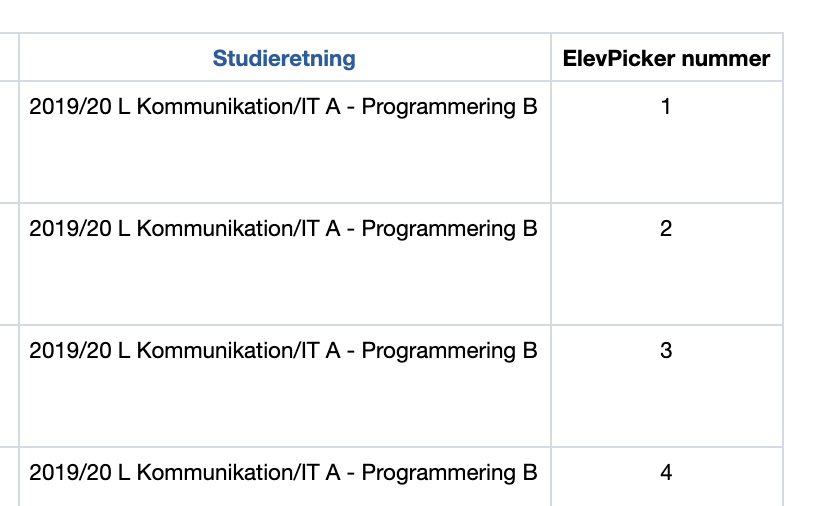

Med ElevPicker kan du udvælge en tilfældig elev ved at klikke på den røde knap som hedder Vælg en tilfældig elev.
Samme elev kan ikke blive trukket igen før alle elever er trykket eller du genindlæser siden.
For at vise alle eleverne igen, men ikke nulstille hvilke elever der er blivet trukket.
Så skal du bruge knappen.
Du har også mulighed for at lave grupper, til det skal du klikke på den gule knap Lav grupper.
Ud fra grupperne har du mulighed for at danne matrix grupper ud fra grupperne. Du skal bare tjekke checkboxen af.
Du kan læser mere om gruppe funktionen her
Du kan bruge ElevPicker ved at gå ind på en klasses elever side. Her er vejen derind:
Hovedmenu.
Klasse på listen og klikker.
Elever.
Hvis du har nogen elever som ikke skal trækkes eller i nogen gruppe.
Så skal du skrive deres ElevPicker nummer, hvis du holder musen over (ElevPicker nummer) så kan du se hvor du kan finde ElevPicker nummeret.
Når du skal skrive de elever som du ikke vile trække eller have en nogen gruppe. Så skal du skrive elevens ElevPicker nummer i input feltet, og hvis du vil skrive flere elever. Så skal du dele talene med et komma. Det ville så sådan ud er: 10,6,12,22
ElevPicker nummerne er i deres egen kolonne i tabellen med eleverne.

For at lave grupper skal du først klikke på den gule knap Lav grupper. Derefter vil der komme en kasse frem.
Det første felt skriver du hvad grupperne er til, altså om det er matematik grupper eller engelsk grupper osv.
Dette bliver også navet på filen som grupperne bliver gemt i.
Du kan enten lave grupper ved at sige hvor mange grupper du vil have, eller hvor mange elever der skal være pr. gruppe.
ElevPicker vil selv regne ud hvis det ikke går op og tilføje elever til grupper som er overskydene.
Antal grupper.
Antal elever pr. gruppe.
Elever som ikke skal i nogen gruppe (ElevPicker nummer). Læs mere om hvordan man skriver elever i dette feltgul knap ved siden af Anuller som også hedder Lav grupper..txt, det er så du kan lave flere versioner grupperne og nemt kopiere dem ind i et word dokument eller lignende.
ElevPicker tager en tilfældig elev fra hver gruppe og sætter den ind i en af matrix grupperne.
En fra hver gruppe kommer i deres egen matrix gruppe, der er to fra samme arbejds gruppe i matrix gruppe er det fordi den arbejdsgruppe var flere end de andre.